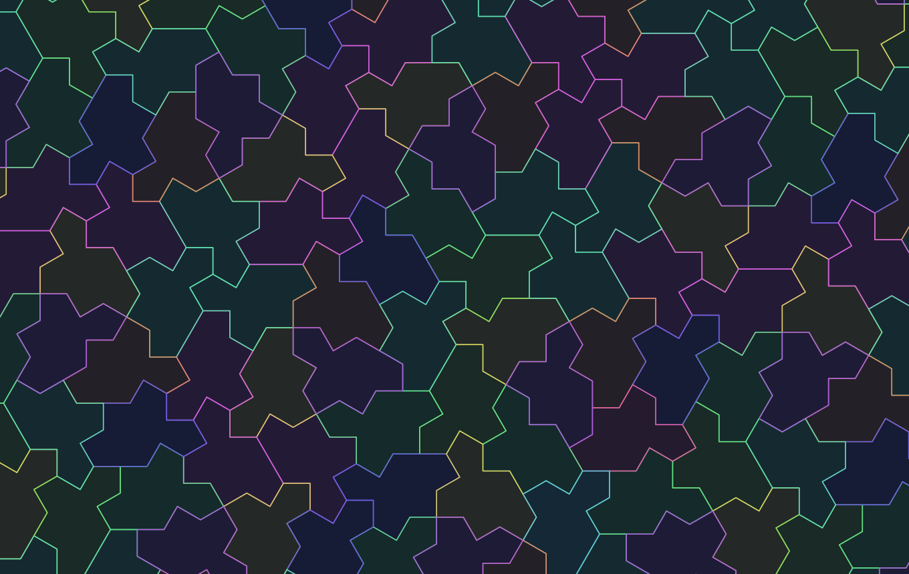

Monotile
Pan an infinite, never-repeating tiling built from the 2023 einstein hat and spectre shapes, then export the view you like as clean SVG poster art.

What Monotile is
In 2023, David Smith, Joseph Samuel Myers, Craig S. Kaplan, and Chaim Goodman-Strauss found the "hat", the first single shape that tiles the whole plane without its pattern ever repeating. A few months later they found the "spectre", a relative that does the same job without needing a mirror-image copy. It settled a question mathematicians had asked since the 1970s: can one tile, on its own, force a pattern that is never periodic?
Almost everyone who has heard of these tiles has only seen a still picture. Monotile lets you grab the pattern and move it. Drag the canvas and watch new tiles keep filling space in every direction, generated live by the spectre substitution system rather than copied from a looping image. It runs entirely in your browser, with no login and nothing to install.
How to use it
- Pan and zoom. Drag the canvas to move; scroll to zoom into the point under your cursor. Arrow keys,
+/-, andHomework once the canvas is focused, and touch devices pan with one finger and pinch with two. - Recolor. Pick Supertile, Generation, or Orientation to color every tile by its place in the substitution, or keep the flat Line view. Each change ripples outward from where you click.
- Inspect. A crosshair readout follows your cursor with coordinates, generation, and tile type. Click a tile to pin its full lineage.
- Export or share. Export SVG saves the current view as a standalone vector file. Copy Link puts the exact pan, zoom, and coloring into the URL.
FAQ
- What is the einstein tile?
- An "einstein" (from the German ein stein, one stone) is a single shape that tiles the plane only in non-repeating ways. The hat, found in 2023, was the first one proven to exist. The name is a pun, not a reference to the physicist.
- What is the difference between the hat and the spectre?
- The hat needs both itself and its mirror image to tile without repeating. The spectre, found shortly after, tiles aperiodically using only one handedness, so it is a "true" single tile. Monotile draws the spectre.
- Does the pattern really never repeat?
- Yes. Monotile builds tiles by substitution, the same method the original paper uses to prove aperiodicity, so no matter how far you pan you are always inside honest, non-repeating output rather than a large image that loops at the edges.
- Can I use the exported art?
- The SVG you export is a plain vector file you can open, edit, and print in any tool. Monotile is open source under the MIT license, so the code and what you make with it are yours to use.
- Do I need an account or an install?
- No. Everything runs client-side in the browser. There is no sign-up, no server, and nothing to download to explore or export.